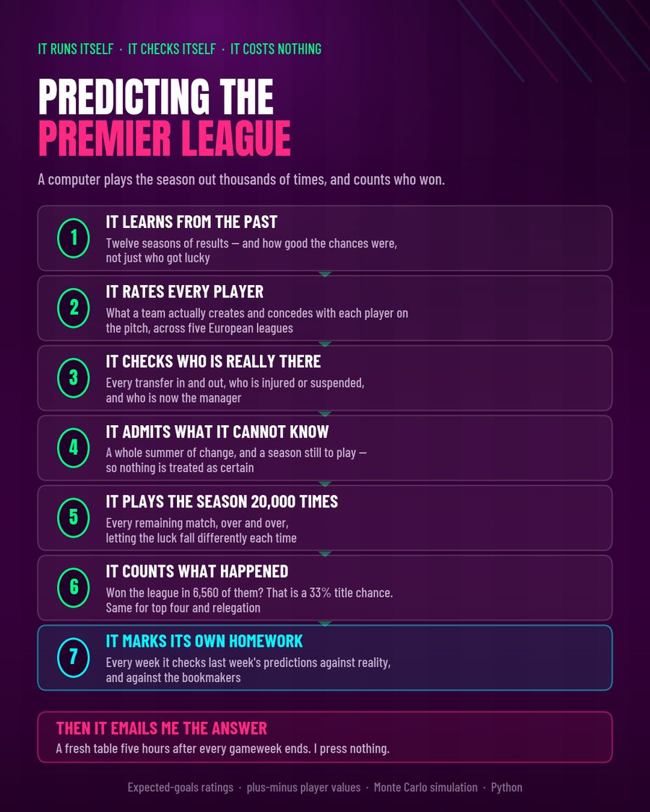
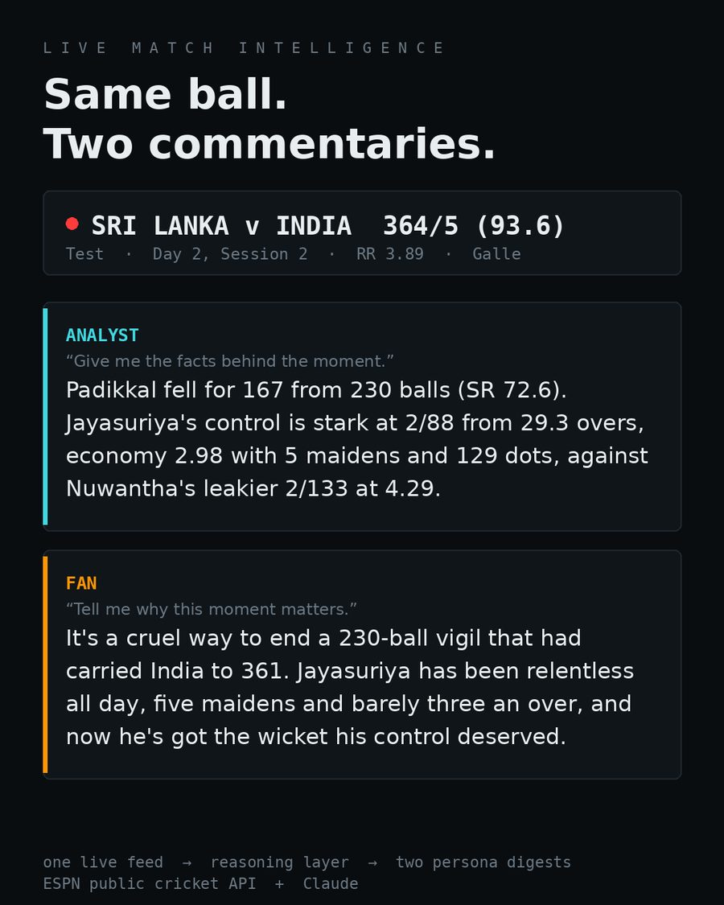
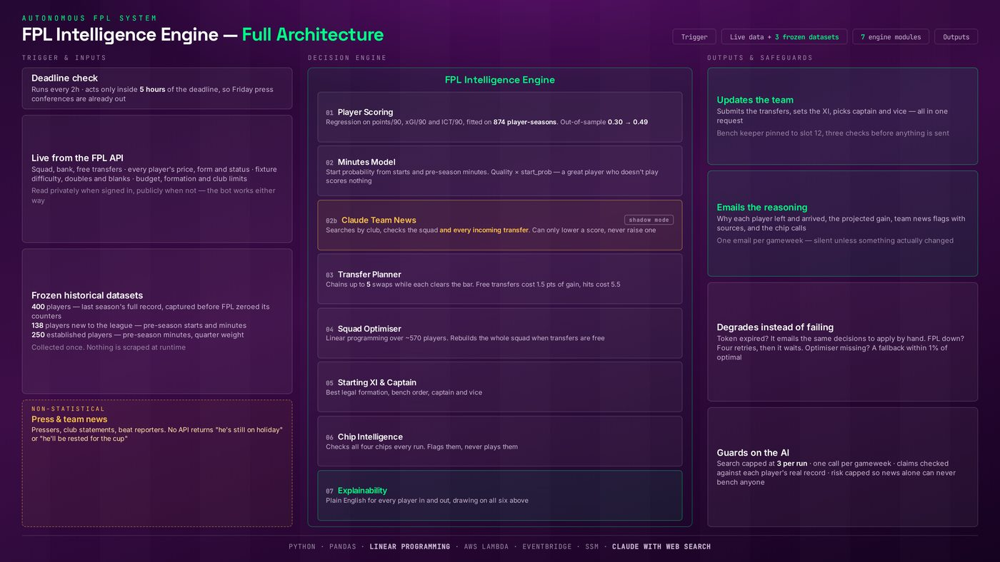

Projects
Built alone.
Shipped in public.
Every one has a live link, a public repository, and a written record of what failed. The numbers here are reproducible — the code that produced them is one click away.


Premier League
Supercomputer
Python · Dixon-Coles · Monte Carlo · GitHub Actions
Predicts the Premier League table, refits itself after every gameweek, and grades its own past predictions against the closing market. Nobody presses anything, and it costs nothing to run.
Switched off, and still in the repository
Market odds blendMarginal error gain, worse ranking and calibrationManager effects, all changesWorse on every metricForeign-league manager valuesPlayer conversion already weak at n≈200Fixture congestionEffect reverses sign between eras, fails out-of-sample
Version one penalised Liverpool for hiring Slot, who then won the league — it couldn't tell "worse manager" from "manager we have never seen". It ships only where both managers have a Premier League record. Congestion was the one I most wanted to be true: two datasets, seven seasons, net effect +0.00002.


Cricket AI Digest
Node · ESPN Cricket API · Claude · WebSocket
One live cricket feed in, two briefings out — the facts behind the moment for an analyst, why it matters for a fan. Both generated from the same raw match state.
What I got wrong
Two traps in ESPN's schema, both caught by reading the raw payload rather than trusting the field names. A team that hasn't batted can appear as 0/0 (73 ov), because bowling overs are mirrored into the wrong side's linescore. A digest built from all-null fields still looks like a success in the logs — so a debug endpoint returns the exact object handed to the model.
Hosted on a free tier that sleeps when idle, so the first load can take a minute to wake, and digests appear once a live match updates.


FPL Auto Manager
Python · AWS Lambda · Linear programming · Claude
Rates every player, plans transfers, picks the eleven and the captain, submits them, then publishes its projection before kickoff so it can be marked against a human. Unattended, every week.
onlyWhat the language model may do to a projectionA wrong call costs one player, not the team
The mistake that rebuilt the model
The first version ranked players on FPL's own projection field. Before a season it's a placeholder — about 24 distinct values across 570 players — so a backup goalkeeper and the best striker scored identically. It sold three of the squad's best players and bought a forward who had started three games all season.
The code ran perfectly. The thinking was wrong.
The short version
Every claim on this page has code behind it.
The detail lives in the repositories, where the backtest scripts sit next to the results and the rejected versions are still in the history. That's deliberate — a number you can't reproduce isn't evidence.